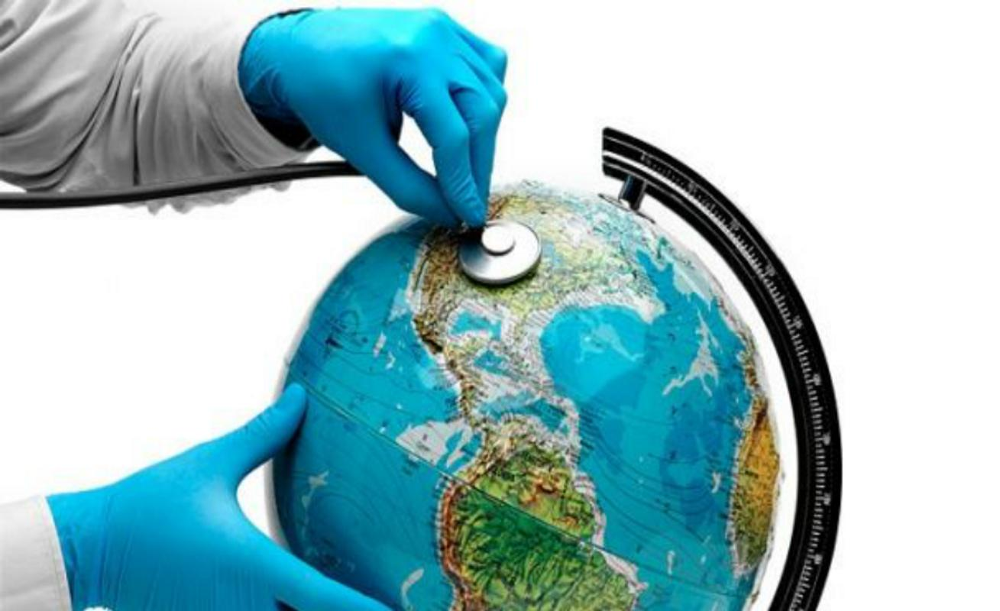
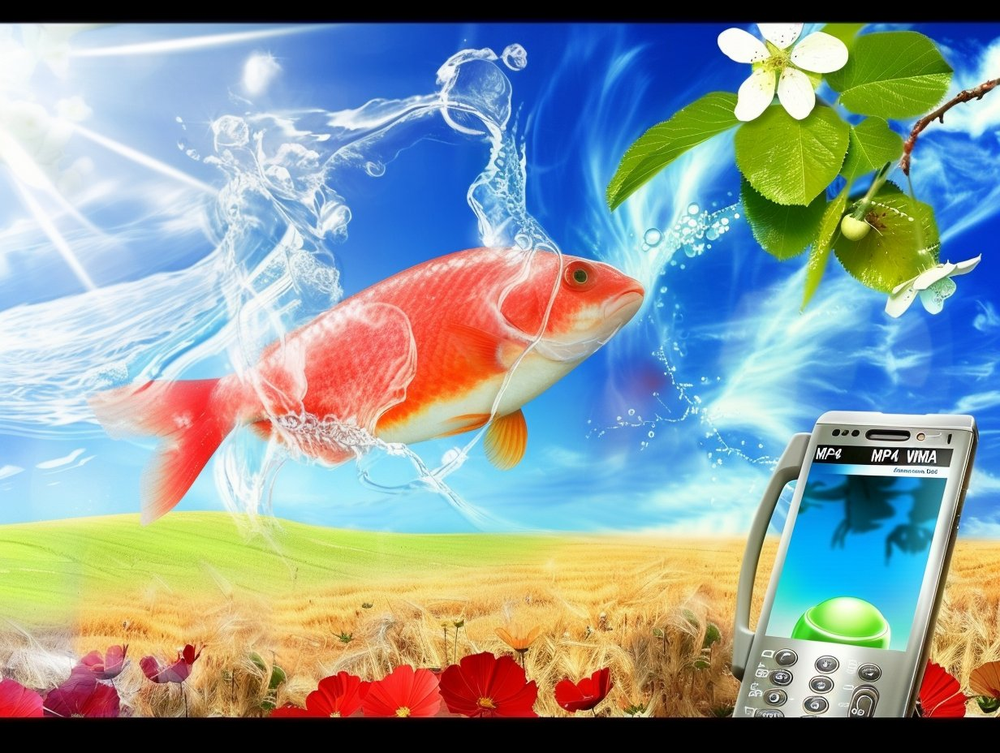
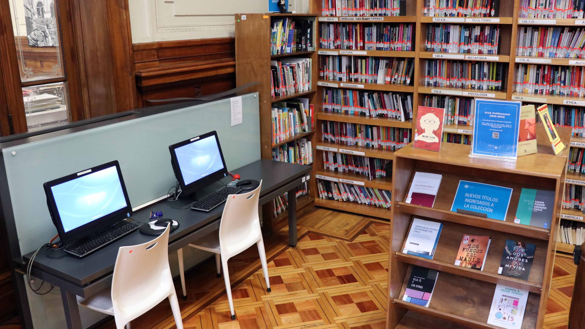

Problemáticas en Salud
Analizando noticias actuales, como grupo notamos que el desarrollo tecnológico reciente expone un problema estructural irreparable considerando el sistema económico contemporáneo. Por un lado, evidenciamos una integración forzada y una dependencia de inteligencia artificial, donde las instituciones educativas, laborales y sociales la normalizan e imponen, como también la hiperconexión como requisito básico para el desempeño laboral y la participación ciudadana. Por otro lado, nace un contundente rechazo por parte del gremio de profesionales de salud, ya que esta inmersión digital se señala como problema alertando sobre sus consecuencias negativas en la autonomía y el desarrollo cognitivo.
Este conflicto es evidente al contrastar los discursos de adaptación tecnológica con las crisis sanitarias y sociales derivadas de ella. Mientras que el sistema educativo superior y mecaniza la inteligencia artificial convirtiéndola en una herramienta inevitable para los estudiantes (CNN, 2026; BBC, Artículo 1; BBC, Artículo 2), surge una alarma crítica sobre el desarrollo humano en etapas tempranas.

Problemáticas en las infancias
La comercialización del espacio ha provocado la perdida de espacios físicos de recreación (Diario USACH, 2026), obligando a las infancias a convivir en un ecosistema digital diseñado para generar adicción y dependencia (El País, 2025). En consecuencia, los cuerpos médicos han comenzado a catalogar la exposición a pantallas casi como un riesgo nocivo para el desarrollo neuropsicológico a largo plazo (Cooperativa, 2026). La tensión es innegable, el mercado laboral e institucional obliga al manejo completo de la tecnología que la ciencia advierte como un deterioro en la capacidad cognitiva y social.
Mirada crítica al futuro
Al aplicar un enfoque de Teoría Crítica sobre la concentración del "tecno-poder" que identificamos en nuestras entrevistas, proyectamos que esta contradicción no se resolverá mediante una liberación tecnológica universal, sino mediante una severa estratificación cognitiva.
En 20 años, autodeterminación tecnológica, entendida como el derecho a la capacidad de decidir por cuenta propia, reafirmando el control humano ante sistemas que tienden a automatizarlo, será vendida como un bien de lujo. Las elites pagaran por entornos exclusivamente analógicos, atención humana y una crianza libre de pantallas, garantizando lo que denominamos “Higiene digital”. Al mismo tiempo, las clases medias y bajas quedaran desplazadas a sistemas de interacción cívica, educativos y de recreación 100% automatizadas. La tecnología ya no será neutra, si no que se convertirá en el mecanismo divisor de clases.

Proximo Encargo
Para el próximo encargo, seleccionamos la narrativa de la "Higiene Digital y Soberanía Humana como Privilegio de Clase". Esta narrativa nos exige, como diseñadoras, ir más allá de la mera funcionalidad del objeto: nos obliga a cuestionar políticamente el acceso a la desconexión. Nuestra apuesta será diseñar intervenciones que no solo busquen la eficiencia, sino que enfrenten la brecha cognitiva impuesta por los intereses del mercado, buscando recuperar el espacio y la autonomía que la tecnología actual (bajo sus lógicas de poder) nos está arrebatando.

Referencias
BBC News Mundo. (s.f.-a). [Por qué algunos expertos creen que la inteligencia artificial ya cobró conciencia]. BBC. Recuperado de https://www.bbc.com/mundo/articles/cy90nrdjnlpo
BBC News Mundo. (s.f.-b). ["Mi psicólogo de IA me ayudó a superar momentos difíciles": los riesgos y beneficios de usar un chatbot como terapeuta]. BBC. Recuperado de https://www.bbc.com/mundo/articles/c1w333qq9j4o
CNN Español. (2026, 18 de abril). [Es hora de que los estudiantes comiencen a decidir a qué universidad ir. La era de la IA lo está complicando]. CNN. https://cnnespanol.cnn.com/2026/04/18/eeuu/universidad-estudiantes-inteligencia-artificial-trax
Cooperativa. (2026, 27 de mayo). [Neuropsiquiatra rechaza uso infantil de pantallas y redes: Será una generación sin empatía]. Cooperativa.cl. https://www.cooperativa.cl/noticias/pais/infancia/neuropsiquiatra-rechaza-uso-infantil-de-pantallas-y-redes-sera-una/2026-05-27/203320.html
Diario USACH. (s.f.). [Menos plazas, más pantallas: Niños y niñas en Chile pierden hasta seis mil horas de juego durante su infancia]. Diario USACH. https://www.diariousach.cl/menos-plazas-mas-pantallas-juegos-ninos-ninas-chile
El País. (2025, 9 de junio). [El uso excesivo de pantallas lleva a los niños a necesitarlas aún más]. El País. https://elpais.com/tecnologia/2025-06-09/el-uso-excesivo-de-pantallas-lleva-a-los-ninos-a-necesitarlas-aun-mas.html